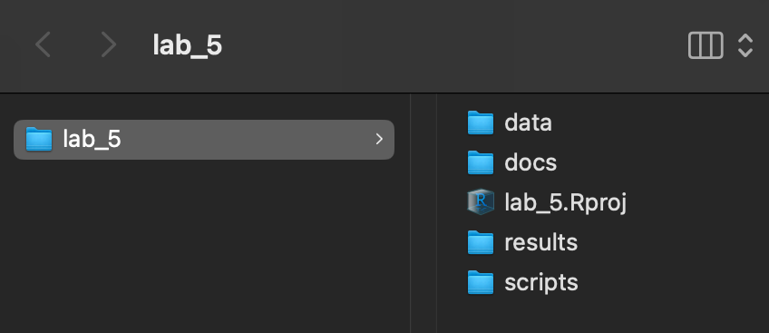

Class 5 Lab: Choropleth Mapping with American Community Survey (ACS) Data
Fall 2025 | Instructor: Stephen Metts | PGUD 5160 - CRN 2247
Preamble
In this fifth demonstration lab, we will continue to repeat the project setup phase of previous weeks (setting the working directory to lab_5) then move along to accessing US Census data - specifically estimates from the American Community Survey (ACS), followed by thematically mapping both the geometry and data from ACS. This lab can and should be used in conjunction with this week’s assignment 5 deliverable - Assignment 5.
Data
Last week we utilized a Census API Key located HERE to first Request a KEY, secure that key and then propagate it into the tidycensus pulls that we did for both the lab and assignment. We will utilize the same key this week. Remember if you have set the census_api_key("YOUR KEY GOES HERE", install = TRUE) indeed to TRUE, your key should persist into future sessions. In other words, you don’t have to call the key if your tidycensus pulls don’t throw errors asking for an API key.
Like week 4, generally we will be utilizing the following ACS 5-year Estimate for the latest period available which is 2023. The next 5-year estimate will be issued as follows:
The ACS 5-year survey in 2025 will include the new 2020-2024 ACS 5-year Estimates, released in December 2025.
Step 1: Project Management in RStudio for lab_5 (also applicable for assignment_5)
As we have done for previous labs, we will create a lab_5 project directory:

A well-organized folder structure within an RStudio project is crucial. Common conventions include:
data/: For raw data (treated as read-only).
docs/: For documentation or R Markdown files.
results/: For outputs and generated results.
scripts/: For R scripts and analysis pipelines.
Step 2:
With the lab_5.Rproj established and the subdirectories for our data analyses established, we can print both the working directory and all the paths and files therein:
Your ‘upstream’ path will likely be different than Users/x15… if you are using macOS, your full path would be akin to /Users/your_machine_name/Desktop/lab_5. On macOS, this can also be expressed as ~/Desktop/lab_5:
The tilde ~ is a special character that acts as a shortcut for the current user’s home directory.
This is fine; we want to simply make sure that the directory we created - lab_5 is indeed the directory in which and from which we are and will be working.
This lab, like the course generally, utilizes macOS file path conventions. Windows users may need to adjust for this difference between their OS conventions and macOS. Traditionally, Windows utilizes the opposite ‘backward’ slash convention as well as naming explicitly the drive location: Windows: C:\Users\username\Desktop\lab_5 Linux/macOS: /Users/username/Desktop/lab_5
- You can access all 4 scripts at bottom of lab and download all into
/scripts.
Step 3:
For this week’s lab, we will need tidycensus, tidyverse, sf and the gt package. As we have already loaded tidycensus and tidyverse from lab3 and lab4, we really only need to install sf and classInt and RColorBrewer and tigris:
install.packages("tidyverse")
install.packages("tidycensus")
install.packages("sf")
install.packages("classInt")
install.packages("RColorBrewer")
install.packages("ggplot2")
install.packages("tigris")or
If sf fails to install - this can happen on a macOS - open the terminal and run:
Equivalency File:
As utilized in past labs and assignments, we will need to determine both census tracts and census block groups inside NYC Community Districts. To do so, we utilize the following equivalency .csv:
If you need to download a new copy of the equivalency file, you can access it here:
A backup copy is located as follows named 2020_Census_Tracts_to_2020_NTAs_and_CDTAs_Equivalency_20250903.csv. This version needs to be uncompressed before using in your scripts:
Script 1: Choropleth Mapping for NYS Counties - Median Income - 2023 5-Year Survey
Step 1:
Make sure Class 5 Lab 5 R Script #1 is open in your RStudio scripts File>Open File>lab_4>scripts>c5_lab5-script-1.r
In this first script, we will map Median household income (2023 inflation-adjusted $) Variable "B19013_001" for New York State Counties. We will first plot the variable histogram so we can see the shape of the data which can help inform which classification method might be the best fit for the data.
Once the tidycensus pull is made and the histogram is produced, we will review the the handling of NA in the script. While NY State counties are highly aggregated and likely to have a stable variable recording without NA observations, in more local geographies like census tracts and census block groups this isn’t necessarily the case. Remember, the smaller the total population, the chances for significant MOE increase, as well as the chances that the observation is so unstable that the census is not publishing it for that particular geography. There are several possible reasons, the most common:
Insufficient data: An estimate or margin of error may not be available for an observation due to an insufficient number of sample cases in that geographic area.
Next, we move onto the actual mapping component of the script. We create the maps, set the bins and then allow three versions to print:
# ---- Build the three maps ----
map_equal <- make_map(ny_binned, "bin_equal", "Classification: Equal Interval")
map_quant <- make_map(ny_binned, "bin_quant", "Classification: Quantile")
map_jenks <- make_map(ny_binned, "bin_jenks", "Classification: Jenks (Natural Breaks)")
# ---- Print maps ----
print(map_equal)
print(map_quant)
print(map_jenks)Script 2: Geometry Mapping for Census Block Groups (CBGs) in Manhattan CD03 - 2023 5-Year Survey
Step 1:
Make sure Class 5 Lab 5 R Script #2 is open in your RStudio scripts File>Open File>lab_4>scripts>c5_lab5-script-2.r
Make sure to read in the equivalency table correctly:
CD_CT <- read.csv("~/Desktop/lab_5/data/2020_Census_Tracts_to_2020_NTAs_and_CDTAs_Equivalency_20250903.csv")Next, we make a tracts_id object picking up the CDTACode that is Manhattan CD 03:
`tracts_id <- as.character(CD_CT$GEOID[CD_CT$CDTACode == "MN03"]) |> stringr::str_pad(11, pad = "0")`In the tidycensus pull, we set the geography to geography = "block group" which will return the census block groups that we will then filter with the tracts_id object.
Like our previous script, we also flag any NA observations; this will be important for local geographies like census tracts and census block groups.
In the first plot, we just map the census block groups within the CD03; in the second, we map the proportionate share of total population of CD03 that is contained within each census block group. Note that the % tends to concentrate in the interior of the CD03 while the geographies along the eastern and southeastern edges are 0%.
While our script notifies us that there are no block groups containing NA, if we look at our object acs_bg_sel - the census block groups within CD03 - we can see that there are 13 block observations with Zero population. This often happens is census geographies at abut water or infrastructure features that don’t typically feature households and populations. We need to be aware of these ‘low and no’ population geographies as they can impact choropleth mapping classification methods.
Script 3: Choropleth Mapping for Census Tracts (CTs) in Manhattan CD03 - Median Income - 2023 5-Year Survey
Step 1:
Make sure Class 5 Lab 5 R Script #3 is open in your RStudio scripts File>Open File>lab_4>scripts>c5_lab5-script-3.r
Make sure to read in the equivalency table correctly; alternatively, keep the table from the previous script in your working session:
CD_CT <- read.csv("~/Desktop/lab_5/data/2020_Census_Tracts_to_2020_NTAs_and_CDTAs_Equivalency_20250903.csv")While script #2 utilized census block groups, here we will aggregate one step up to census tracts to control for the potential for significant NA and Zero observation returns. Our theme and geography is as follows:
Tracts (MN03) — Median Household Income, ACS 2019–2023
In our script #3, we do flag NA census tract returns, both in the map plot and as an object that is printed at the end of the script.
In order to produce our three map classification versions we use the following code chunk:
# ---- Build and print the three maps in sequence ----
map_equal <- make_map(tract_binned, "bin_equal", "Classification: Equal Interval (5 bins)")
map_quant <- make_map(tract_binned, "bin_quant", "Classification: Quantile (5 bins)")
map_jenks <- make_map(tract_binned, "bin_jenks", "Classification: Jenks (Natural Breaks; 5 bins)")In the returned object na_only_tracts we see that we have two census tracts that do not contain data. We also set those off to a neutral gray color in our choropleth map, setting these geographies off in the legend.
Note that we are returning a very significant range of income values from 20,876 all the way to 166,447. While there is no ‘incorrect’ classification method, we can argue that the Quantile approach captures the concentration of both the very high and very low values as binned classes, whereas Equal Interval and Jenks shows the geographic pattern of the higher values vs the lower values in meaningful ways.
Script 4: Choropleth Mapping for Census Tracts (CTs) in Manhattan CD03 - % Owner Occupied - 2023 5-Year Survey
Step 1:
Make sure Class 5 Lab 5 R Script #4 is open in your RStudio scripts File>Open File>lab_4>scripts>c5_lab5-script-4.r
Make sure to read in the equivalency table correctly; alternatively, keep the table from the previous script in your working session:
CD_CT <- read.csv("~/Desktop/lab_5/data/2020_Census_Tracts_to_2020_NTAs_and_CDTAs_Equivalency_20250903.csv")In this script #4, we replace the Tracts (MN03) — Median Household Income, ACS 2019–2023 with Tracts (MN03) — % Owner-Occupied Housing Units (ACS 2019–2023, B25032. We keep the geography consistent - census tracts in CD03, but we do indeed replace income with the % of the total of housing units which are Owner-Occupied. We can test the hypothesis that higher income tracts also contain higher % of Owner-Occupied units.
Using the same classification methods, we can see that your result, at least for CD03 is significantly different than the presumption that higher income tracts correspond directly with higher % of Owner-Occupied units. This is due in large part to the uniqueness of housing development in this geography in NYC. Here we can see very high Owner-Occupied rates at/near Cooperative Village to the east; and conversely, very low rates (which translates as very high Renter-Occupied rates) northward at/near Alphabet City.
Concluding Remarks
In this fifth demonstration lab, we reviewed both census block group and tract geographies, and how to map them for ACS variables using choropleth, thematic mapping approaches and classification methods. We also flagged NA observations, but did allow for for zero 0 values to pass through to our final mapping.
In this week’s Assignment 5, script #3 and #4 will be utilized for your own choice of community district in NYC.
Access this lab as needed for review and preparation for Assignment 5.
Scripts & Backup Data:
Class 5 Lab 5 R Script #1 - open in your RStudio
scriptsFile>Open File>lab_4>scripts>c5_lab5-script-1.rClass 5 Lab 5 R Script #2 - open in your RStudio
scriptsFile>Open File>lab_4>scripts>c5_lab5-script-2.rClass 5 Lab 5 R Script #3 - open in your RStudio
scriptsFile>Open File>lab_4>scripts>c5_lab5-script-3.rClass 5 Lab 5 R Script #4 - open in your RStudio
scriptsFile>Open File>lab_4>scripts>c5_lab5-script-4.r